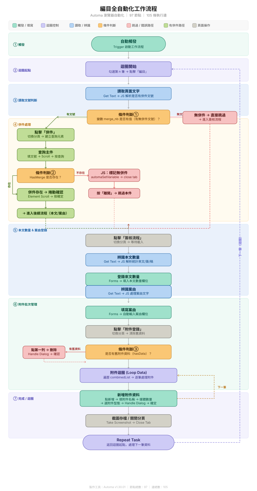

Automa | 流程自動化腳本
台北市消防局實習專案：高效能 RPA 數據採集與行政自動化工具
🔒 資安保護聲明：
因公務單位資訊安全規範，本頁面不便展示實際系統操作截圖或錄影。 僅針對自動化腳本之「邏輯架構」與「流程設計」進行展示。
因公務單位資訊安全規範，本頁面不便展示實際系統操作截圖或錄影。 僅針對自動化腳本之「邏輯架構」與「流程設計」進行展示。
專案簡介 | Project Overview
- 系統定位：針對政府機關大量行政公文與索引檔案設計的自動化 RPA 腳本。
- 核心技術：Automa、JavaScript、Python、DOM 分析。
- 解決痛點：取代手動重複點擊與人工複製貼上，減少80%以上時間。
我的開發角色 | Development Role
- 流程邏輯設計：建立條件判斷與迴圈邏輯，處理動態頁面。
- JS 數據處理：撰寫 JS 進行資料判斷邏輯與整合。
- 異常處理機制：設計錯誤處理與自動重試機制。
工作流程圖 | Workflow Logic
下圖展示了自動化腳本的核心邏輯架構，包含資料初始化、條件判斷、迴圈處理與結果輸出，確保流程穩定且高效率執行。

( 提示：此圖為長格式流程，您可以上下滾動視窗查看完整細節 )
技術挑戰 | Technical Challenges
-
挑戰一：附件辨識與多格式相容性
💡 解決：設計附件辨識邏輯，確保不同格式皆可正確處理 -
挑戰二：長公文載入超時與流程中斷
💡 解決：建立超時跳過機制，避免流程中斷
專案成果 | Results
- 效率提升：相較於人工操作，自動化執行速度提升了約 85%。
- 準確性：降低人工錯誤，確保資料正確